Solar Advisor imports your live and historical data, applies your real day, night and peak tariff, and tells you the euro value of every kilowatt-hour your panels produce — onsite, exported, and against your payback.
The Live screen shows generation, consumption, import and export — refreshed every minute. Underneath each tile, the interpretation: is solar carrying the home right now, or is the grid?
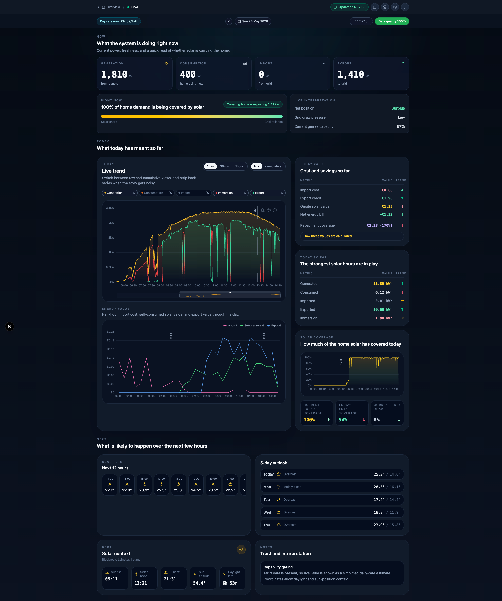
Most solar apps tell you watts. Solar Advisor tells you what those watts did to your bill. Tariff changes mid-period? Solar Advisor applies the correct rate to each day automatically.
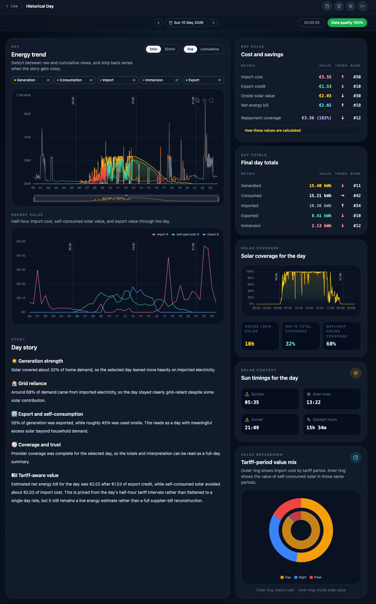
Pick any window — a week, a season, all of it. Solar Advisor reconstructs your bill with solar against a no-solar counterfactual, month by month, and ticks the recovered portion of your install forward.
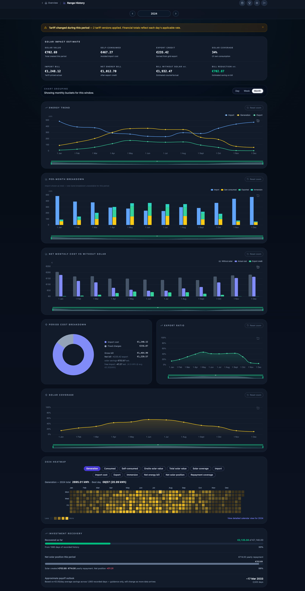
365 bars. One row per month. The best day of the year wears a gold medal — it's the kind of view that makes you feel something about your roof.
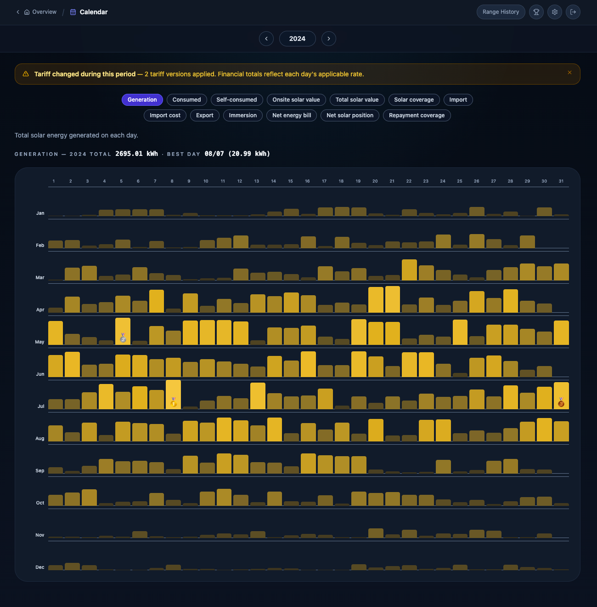
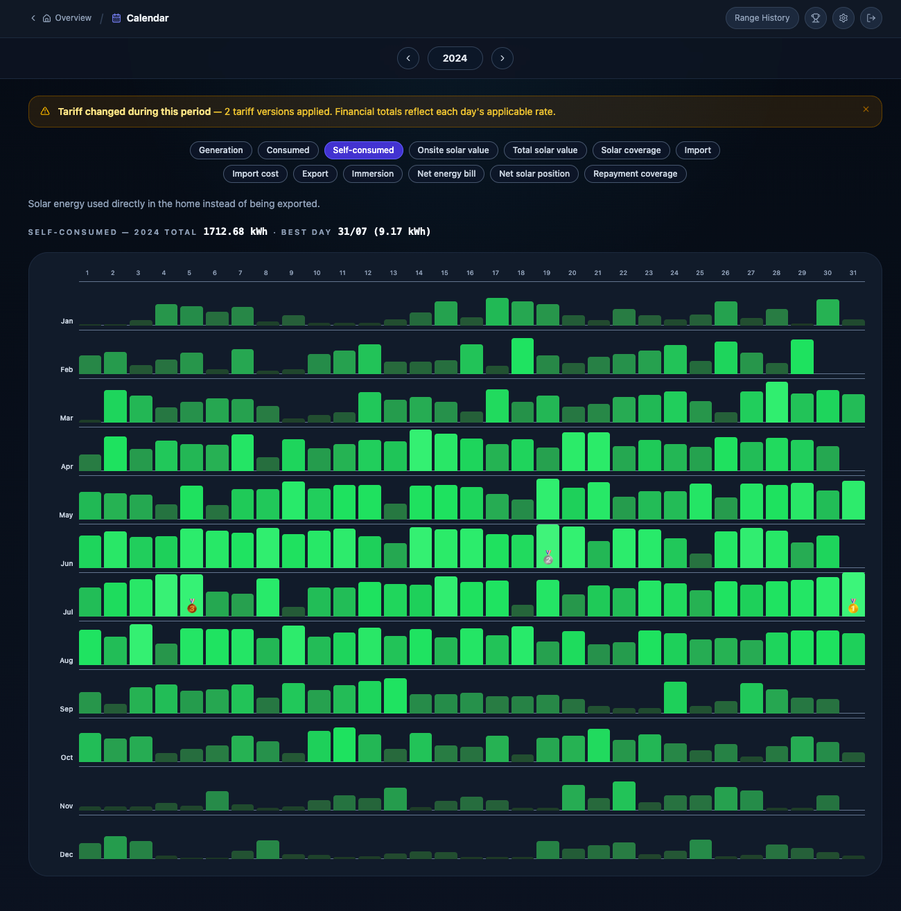
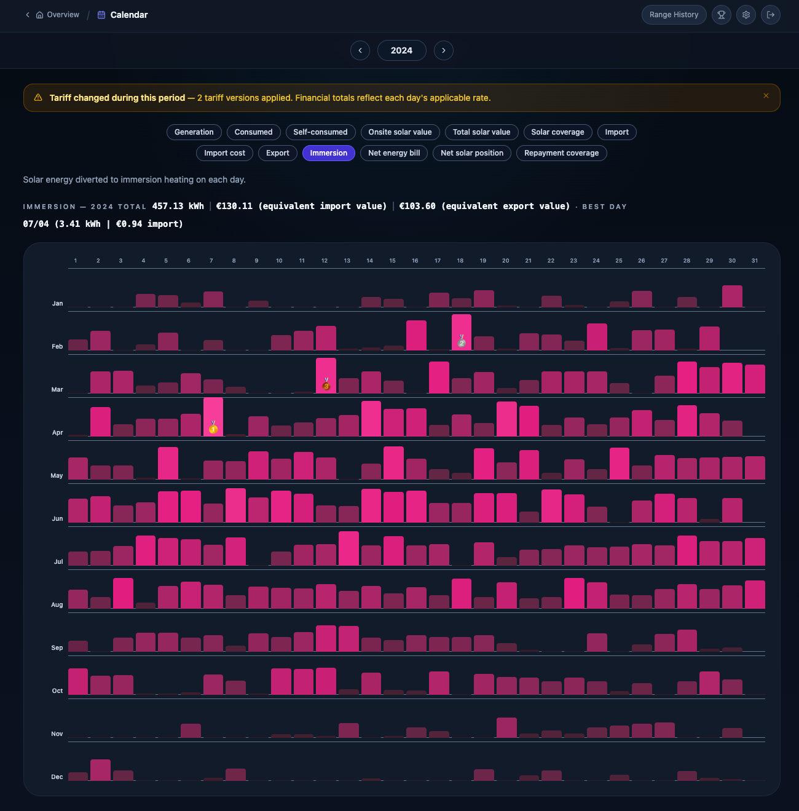
We track all your key metrics and maintain a leaderboard so you can see your best performing days at a glance.
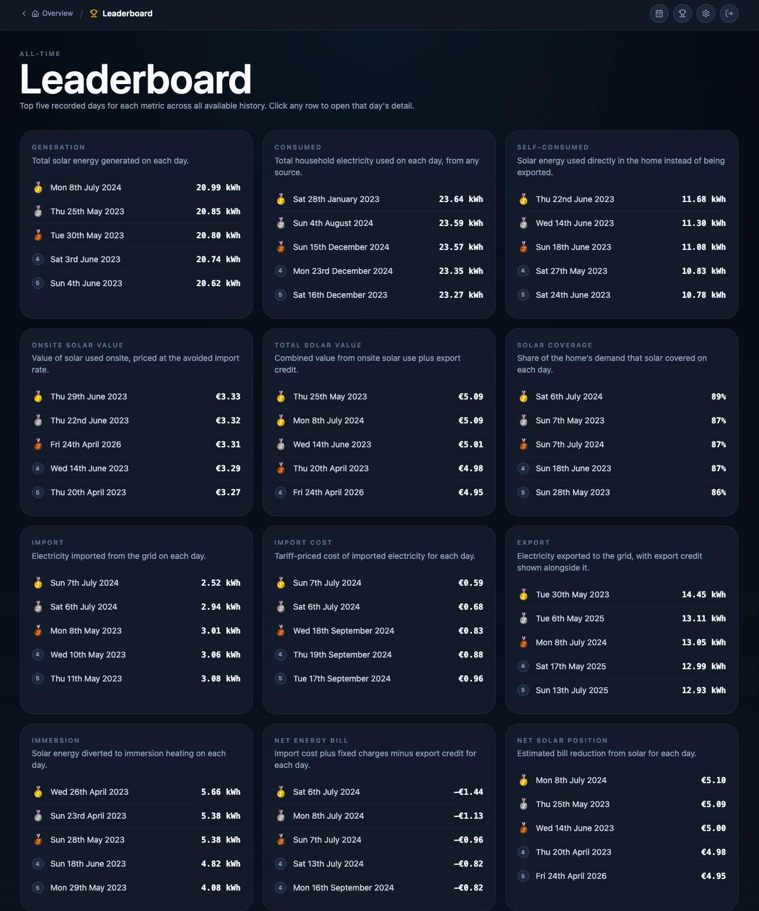
Every euro figure on the dashboard runs through your real tariff schedule. Solar savings are calculated taking your day, night, peak and weekend rates into consideration. Set it once and every kWh, past and future, is priced correctly.
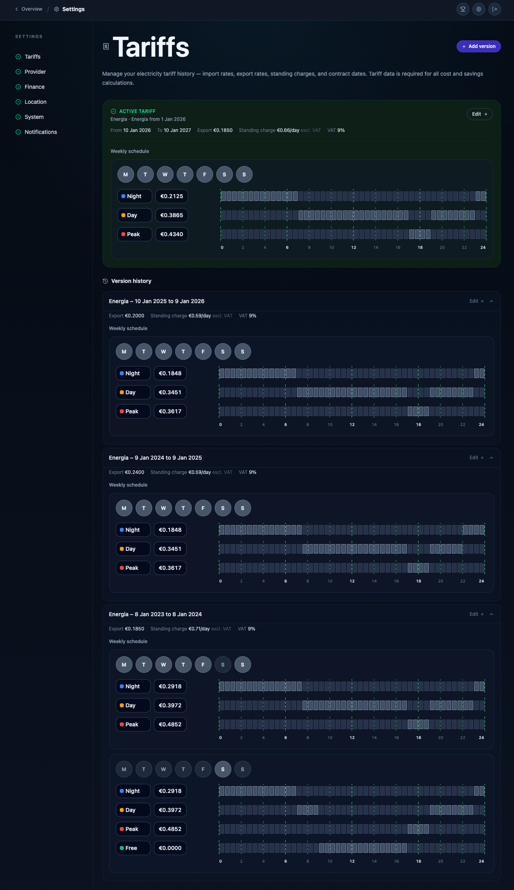
Every screen is built mobile-first. Check live generation from the garden, your tariff window at the supermarket, or where you are on your payback on the train home — without losing a chart, stat or feature along the way.
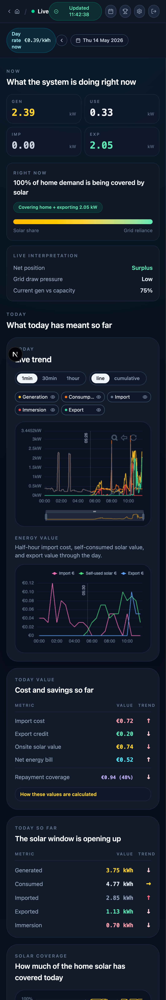
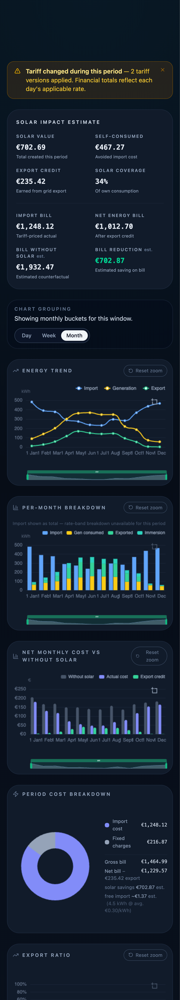
Solar Advisor is a window into your data. We correlate and combine it to show you real insights into your system's performance and ROI. Your data is securely stored and gives you full access to edit or delete it whenever you want.
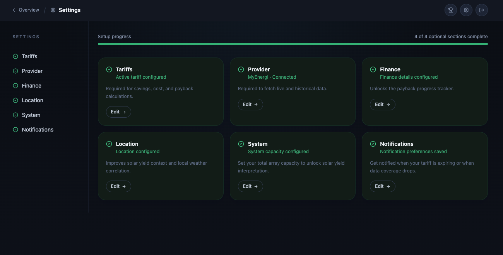
Every aspect of your setup, in one place — yours to edit, delete or disconnect at any moment.
You stay in charge of every byte. One button in your account settings removes your data and every derived insight from our systems — no support ticket needed.
No ads, no aggregated insight sales, no third-party analytics on your generation data. It's used to power your dashboard — and nothing else.
Encrypted in transit and at rest. Solar Advisor is a window into your data — we look through it to give you better insights, we don't open it for anyone else.
Sign up below to request access to the beta rollout, gain early access, and help shape our vision for your data.